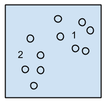
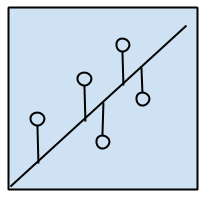
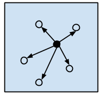
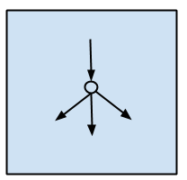

Task Types
Machine learning methods can be grouped by task type. Type refers to the sort of tasks that a method can be used for. The major tasks and associated model types are listed here:

Classification
Tasks that involve returning a class specific label for each datapoint. This is used when you have a finite set of possible classes that you want a method to determine and return. Methods that can perform classification are commonly called classifiers. A clear example is that of deciding if a fish is a salmon, trout, or tuna, based on an image of it fed into the classifier.
Classifiers can be further separated into binary or multi-class. Binary classifiers can only work when there are two target classes to be identified. Multi-class refers to the range of classifiers that can work on any number of target classes.

Regression
Tasks that involve returning a value for each datapoint. This is used when you have an infinite number of valid return values, or when the value you’re trying to predict is ordinal. Classification and regression are easily mistaken. A common regression task of predicting a house’ value based on its age, location, presence of a pool, condition, etc. The values to predict are not categories, but a value along an ordinal scale. Compare this to classifying maple vs oak trees; in the latter case, we only want two output values, one for oak, one for maple.

Generation
Tasks that involve creating an entirely new example of some class, as opposed to returning a value for some new example as an input. A, rather heinous, early example: creating an image of a face that a person is likely to fall in love with, given a set of faces that person is attracted to.

Pattern Discovery
These methods assign points in the training data to certain categories, or find interesting manifolds or patterns in a dataset that can explain that dataset. These are most often found in clustering methods. Technically, curving a class’ grades would be an example of pattern discovery methods. In general, if the method is teaching the user about their dataset, as opposed to learning from the dataset for some other task, then the method is performing pattern discovery.